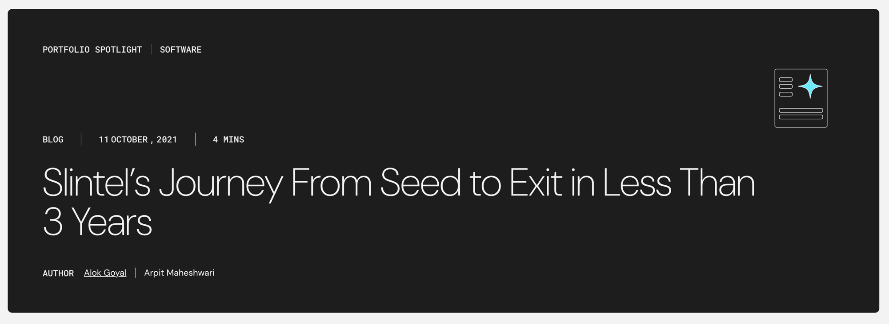

One of the first two marketers on the Slintel team who built the inbound engine from $0 to $6M ARR, Series A funding, and acquisition by 6sense.
When I joined Slintel in August 2019 as the first marketing hire, the company was selling through lead lists and founder networks with no content, no email list, and no social presence.
The bet was inbound content in a company that had only ever done outbound. Most buyers had never heard of buyer intent data, which meant content could do the educational work before a prospect ever reached sales. Blog, newsletter, social, and a rebuilt knowledge base were built in parallel to feed each other, with paid ads, a Voice of Customer program, and sales feedback loops layered on top.

Built organic inbound from scratch through blog content (35+ articles, 5 long-form pieces, 3 ebooks, 8 product videos), LinkedIn and Twitter growth from 2,000 to 10,000+ followers, Quora presence (120+ answers, 23,000+ views, 1+ lead per month), and the free Starter Plan launch. Paired with paid ads using research-backed targeting and a Voice of Customer program that sharpened messaging over time.
Managed G2, Capterra, and Chrome Extension store presence, bringing the extension to a 4.4 star rating and 120 installs. Together these channels brought in 20+ qualified prospects per week from zero.
Also covered by:
I wrote or ghost-wrote 20 posts during this period, grouped below by category.
Ran two newsletters throughout my tenure: a category education newsletter covering technographics and field stories, and a weekly product newsletter I maintained for over a year. Revamping the first grew open rates from 14% to 30%. Ran adoption webinars for existing customers with attendance ranging from 10 to 130 and a peak rate of 42%. Led the V2 onboarding redesign using Appcues, which drove an 18% lift in product activation.
Built battlecards, talk tracks, one-pagers, decks, and case studies covering every major use case and buyer scenario, iterated continuously through call listening and sales feedback. The result was reps spending less time educating and more time closing, with an asset ready for every objection or scenario a prospect raised. Wrote or edited 10 of the 25 customer case studies on the website, used directly in sales cycles as proof without needing to be on the call.
Supported Rambling Sessions, a LinkedIn sales podcast with Anupreet Singh, for 4 months — handling setup, research, and post-episode nurture campaigns. Generated 3 to 4 leads per session with roughly one conversion per month. Also built and ran an outreach campaign to external sales podcasts and publications from a curated list, driving followers and media relationships.
Rebuilt the entire knowledge base from scratch, setting a process and framework that could be handed off and scaled. It reduced repetitive CS questions, fed onboarding and product tours, and became source material for blog content.
Slintel went from no marketing function to a full inbound engine in under two years. Revenue grew 5x in 12 months. The company raised a $20M Series A from GGV Capital, and four months later was acquired by 6sense. The Stellaris blog credited the shift from outbound to inbound with delivering higher scalability and capital efficiency. That shift was built one channel, one asset, and one feedback loop at a time.
I joined as a generalist and left as a product marketer because I had spent three years getting closer to the customer, the product, and the sales process than anyone else on the team. That depth was the real outcome.